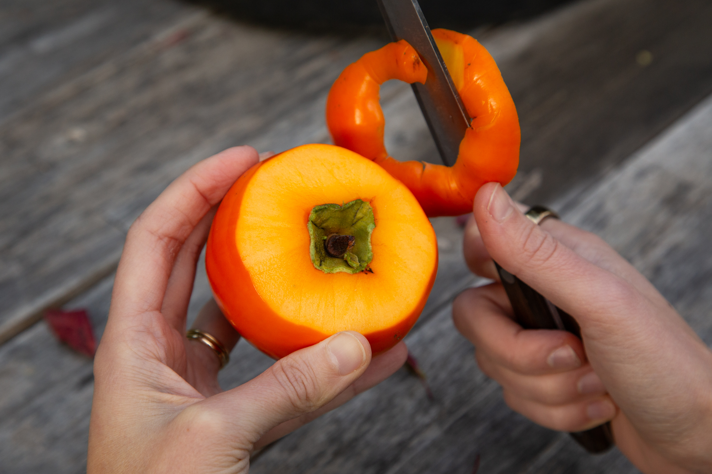
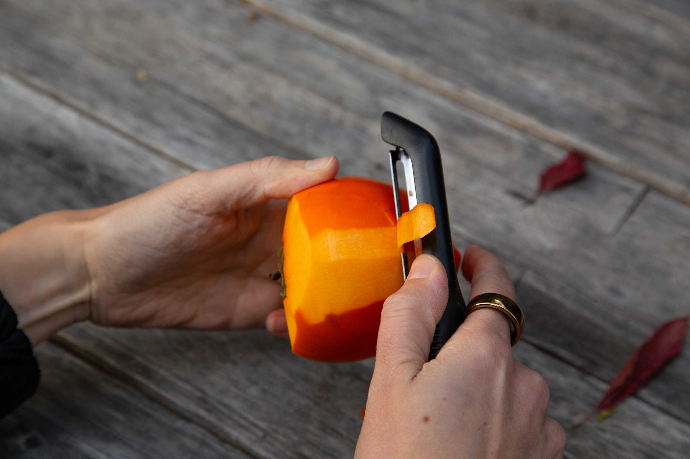

HOSHIGAKI
We learned about drying persimmons while in Japan and seeing them in kitchens in the bay. Here's how to create this preserved fruit!
Melissa quickly fell in love with persimmons after moving to California. As winter falls in Northern CA these beautiful, bright, orange fruits pop up and bring both yards & grocery shelves to life. They are delicious alone (can eat them like an apple) or can add a lovely taste to salads or baked goods. The ways to use them seem to expand every season for us!
This year we wanted to try drying them & preparing Hoskigaki (dried persimmons) as we have seen done in some restaurants around us. Thanks to our neighbor, Yoyo, who has an incredible persimmon tree, we made multiple visits to fill up our bags with fresh Hachiya persimmons to dry at home.
The Process
When the persimmons are still firm, pick them from a tree. Where possible, try to keep a long portion of stem, and ideally a T-shaped branch. Give them a rinse and pull off the top leaves.
Cut away the skin from the top portion of the persimmon that used to be covered by the leaves. Then use a peeler to remove the remaining skin from the fruit.


Tie a slip knot at the end of some kitchen twine. You'll use this to hang the string of persimmons. Tie another knot about 8 inches from the first and tighten it around the stem. Continue making knots and attaching persimmons until you reach a desired length. We hung around six persimmons per string.
Holding the string, dip the persimmons in a pot of boiling water for ~30 seconds to sterilize them. Then hang the string from a tack or nail in a well-ventilated area out of direct sunlight.
You'll notice that your persimmons will start to shrink as the water evaporates. You should not see mold develop if the persimmons were well sterilized and kept in a dry environment. Over time, the persimmons will grow darker and become somewhat shriveled.
After about two weeks, "massage" the persimmons to distribute the juices. Ideally, you can do this daily, but it is not essential.